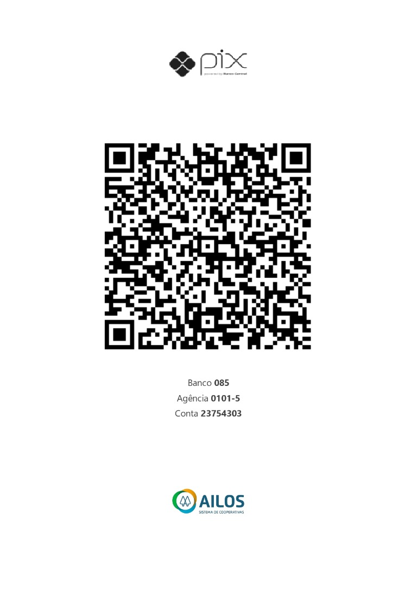

Doe movimento. Doe propósito. Doe com a cidade.
Conexões que fazem a solidariedade circular em Indaial. A Indaial Solidária aproxima moradores, empresas e voluntários das organizações que já atuam na cidade.
A Indaial Solidária é uma mobilização que fortalece as organizações da sociedade civil da cidade. Hoje, nosso foco é dar visibilidade às organizações participantes e conectá-las a quem pode contribuir.
Nova liderança, mesmo propósito.
que querem contribuir.
que podem somar.
que já atuam na cidade.
Conheça as organizações, suas causas e as maneiras de contribuir.
Organizações, projetos e pessoas por trás de cada causa.
Pedidos e formas de contribuição, com instrução clara.
Os problemas sociais ligados a cada causa e quem atua para enfrentá-los.
Parcerias, voluntariado e ações que acontecem na cidade.
Clique em uma ONG para abrir a apresentação completa: quem são, como atuam, projetos, fotos, vídeos e formas de apoiar.
Esta campanha está sendo iniciada em 2026 em conjunto com estas ONGs.
Nenhuma ONG encontrada para essa busca.
Relembre o que a cidade fez junto na edição de 2021, o segundo ano da iniciativa.
Convidamos sem pressionar. Em cada publicação, você verá o que pode fazer, como contribuir, quem recebe e o destino dos recursos.
Acompanhe a Indaial Solidária e conheça as organizações.
Ajude a história a chegar a mais pessoas.
Convide quem também faz parte dessa rede.
Doe qualquer valor.
Abra o aplicativo do seu banco, escolha Pix e escaneie o QR Code.
